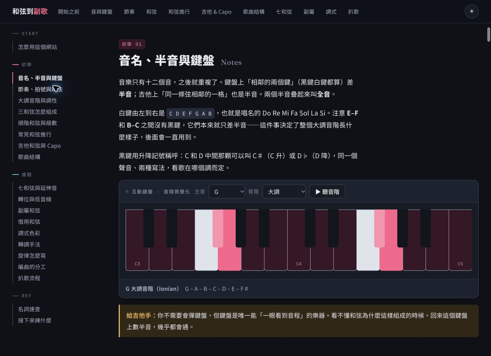

01
從四小節開始
打開網站首頁，點「播放四小節」，先感受 C、G、Am、F 的和弦循環，再閱讀下面的說明。
打開網站首頁，點「播放四小節」，先感受 C、G、Am、F 的和弦循環，再閱讀下面的說明。
利用頁面上方快速跳轉或左側目錄，選音與鍵盤、節奏、和弦，或你正卡住的章節。
選主音和音階、調整節拍器，或換一組和弦進行。每次改一個條件，比較前後的差別。

從「音名、半音與鍵盤」開始，選一個主音，再選要看的音階。畫面會標出組成音；例如 G 大調會顯示 G、A、B、C、D、E、F♯。

在「主音」選單選 G，或你正在練習的調。
在「音階」選單選「大調」，觀察鍵盤亮起的音。
點「聽音階」或鍵盤上的單音；把聽到的聲音和亮起的位置對照。
到「節奏、拍號與刷法」找到節拍器，選拍號、調 BPM，再按「開始」。練完請停止播放。先選能穩定演奏的速度。
到「三和弦怎麼組成」選根音，點不同和弦，比較組成音與音色。不要急著背全部，先從大三和弦與小三和弦開始。
到「常見和弦進行」選進行、調與 BPM，再使用播放／停止按鈕。固定一組進行換調，觀察和弦名稱如何改變。
到「吉他和弦與 Capo」查看開放和弦圖與對照表。選歌曲的調，查看可用的夾位與手型，再回到樂器試彈。
直接用瀏覽器開啟公開網站即可使用本手冊介紹的章節與工具，無須登入。
先檢查裝置音量、分頁是否靜音及音訊輸出裝置，再主動點一次播放。網站使用瀏覽器即時合成聲音；本次核對未包含實際音訊聽測。
可以。目錄分為初學、進階與參考，你可以直接跳到需要的章節，再回頭補相關觀念。
使用頁面右上方的配色切換按鈕。截圖呈現深色模式，內容與操作入口請以當前頁面為準。